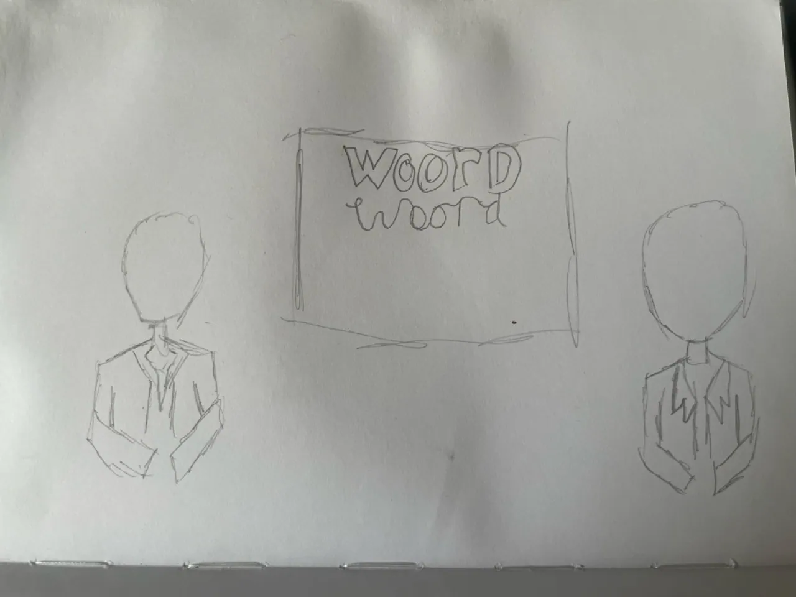

Framing Story
An installation where the same climate protest is told by two opposing news presenters at once.
- role
- Audio-visual designer
- timeline
- 4 weeks
- tools
- After Effects, TouchDesigner
- type
- Class project
the challenge
Playing two conflicting news narratives at the same time without it turning into noise, while keeping both sides equally strong.
the solution
Careful timing, layering and volume shifts give the overlap structure, and designed text guides the viewer: bold red for the anti-protest side, calmer green for the other, so neither one looks simply good or bad.
